Solution: Differences in Emotional Expression
Answer: TALK BACK
Written by Jonah Ostroff
Each puzzle in the Sociology department uses parts of the profiles of two fish. This puzzle uses the “Questions” from Salmon’s PokeCupid page, and the five pictures with five smiling emojis from Hammerhead’s Instaclam page.
The five pictures on Hammerhead’s page, together with their captions, each clue a different tech platform: Twitter, Google, Apple, Samsung, and Microsoft.
Each picture also contains five smiling emoji, one with heart eyes and four without, but the emoji styles differ by picture. This clues what the puzzle is about: each of these five platforms has its own set of emoji, and we are looking for differences between them.
Now that we’ve got the five platforms and the ordering, it’s time to answer the questions on Salmon’s page. Each of these questions refers to a specific emoji, and the answer depends on the platform. Answering each question “yes” or “no” for the platforms in the given order gives a letter in five-bit binary:
1. When you eat a hamburger, do you put the tomato directly under the top bun?
| Apple | Samsung | Microsoft | Extract | ||
| 10100 | |||||
| 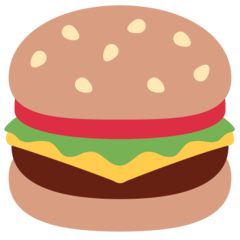 | 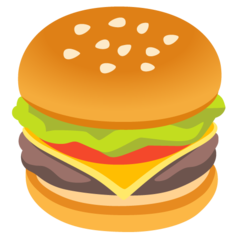 | 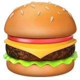 | 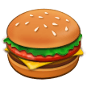 | 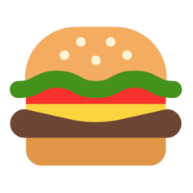 | T |
2. (This is a red flag!) Is there a golf ball near you?
| Apple | Samsung | Microsoft | Extract | ||
| 00001 | |||||
| 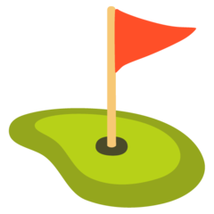 | 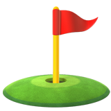 | 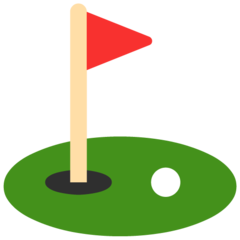 | A |
3. Does your watch say that it's 10:10?
| Apple | Samsung | Microsoft | Extract | ||
| 01100 | |||||
| 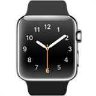 | 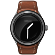 | L |
4. Do you bring a racket when you play tennis?
| Apple | Samsung | Microsoft | Extract | ||
| 01011 | |||||
| K |
5. Do you like olives on pizza?
| Apple | Samsung | Microsoft | Extract | ||
| 00010 | |||||
 | B |
6. Do you find it hard to get a date, specifically?
| Apple | Samsung | Microsoft | Extract | ||
| 00001 | |||||
| A |
7. Can you juggle four balls at once?
| Apple | Samsung | Microsoft | Extract | ||
| 00011 | |||||
| 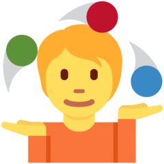 | 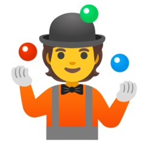 | 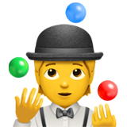 | C |
8. When you look in the mirror, do you see an ellipse?
| Apple | Samsung | Microsoft | Extract | ||
| 01011 | |||||
| K |
The extracted letters spell the answer, TALK BACK.